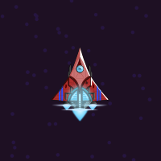
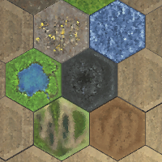

Cameron Howling
About Me
I am Cameron Howling. I'm a Developer and Academic from Melbourne.
I attended Deakin University where I have completed Bachelor of Information Technology (Game Design and Development) in 2016 and a Bachelor of Information Technology (Honors) in 2018.
In 2021 I completed a Master of Information Technology (Virtual Reality) with a high distinction average.
During my academic career I’ve been employed at Deakin University and Deakin College. My primary responsibilities have included unit coordinating,
unit development, lecturing, demonstration, assessment, research, and coaching.
I've taught both local and international students from a wide range of cultural backgrounds and diverse identities.
My Development work has been centered in game development. Primarily, I've developed Unity based applications for student and professional projects in Virtual and Augmented Reality. In addition to this I have developed applications (and taught) using Unreal Engine 4, C#, C++, and OpenGL (Shaders).
Contact Me
For any inquiries please contact me at my email address:
CameronCHowling@gmail.com
Project Portfolio

SpaceGame
SpaceGame was a project I developed independently over 8 weeks for Deakin College in 2021. It was made using C++ and the SplashKit framework.
The purpose of this project was to recreate a game project originally created using the Unreal Engine 4 blueprint system for teaching game development to first year university students.
SpaceGame is largely the same in functionality to the original UE4 version - and an executable of the original is provided for comparison.

Oki's Valley
Oki's Valley was developed as a VR equivalent game application for a Masters student project. In this game the player can change the ground tiles of a sandbox world to
increase the worship of the god 'Oki' from the human inhabitants. It was developed in the Unity engine. All 3D assets and textures were sourced from appropriate licenses. The user interface sprites were
created for this project. A playable executable is available in the build folder of the project.